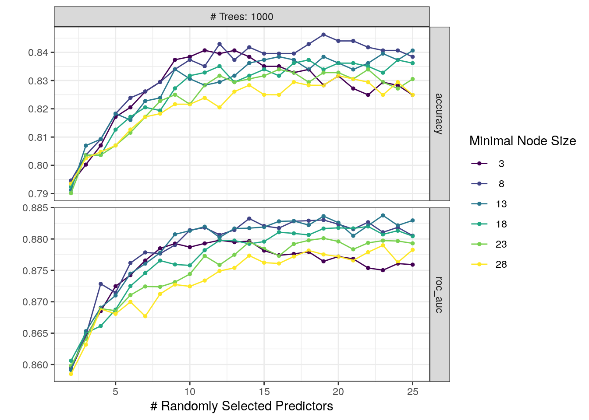
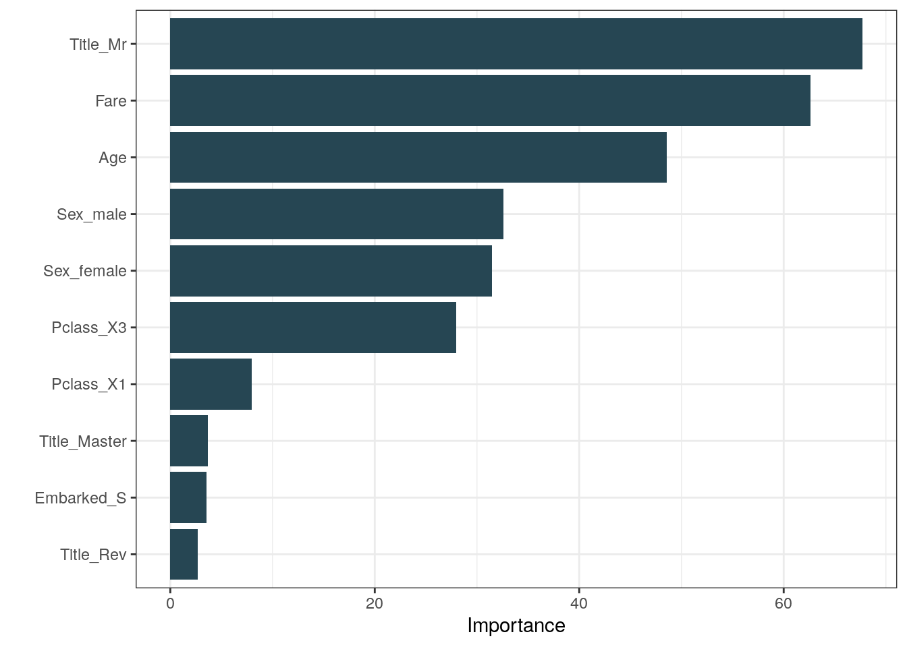
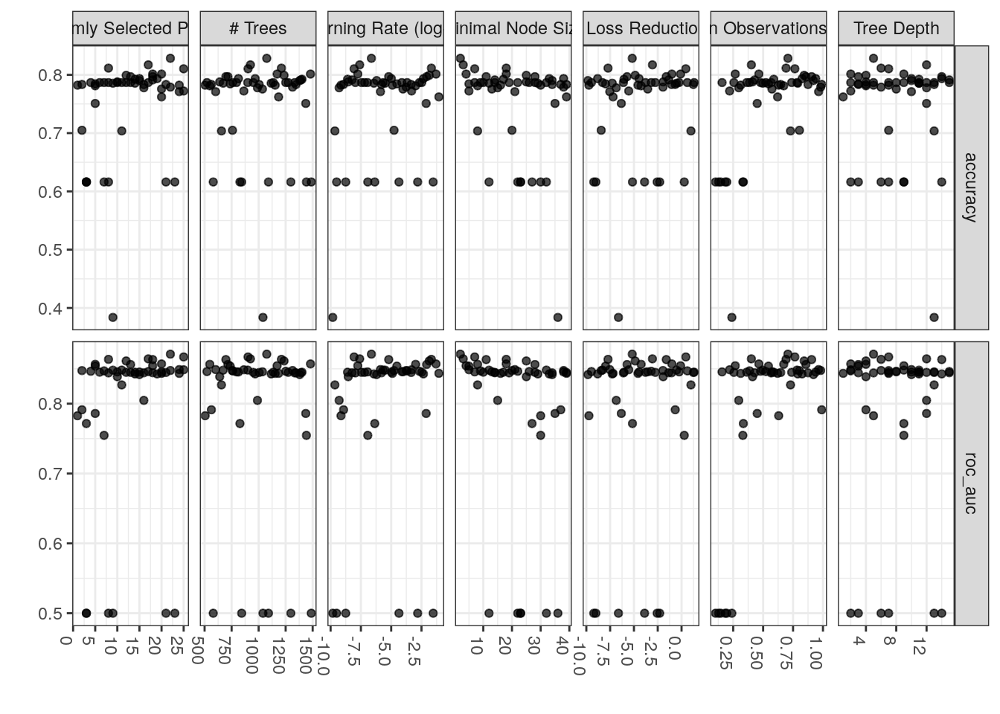
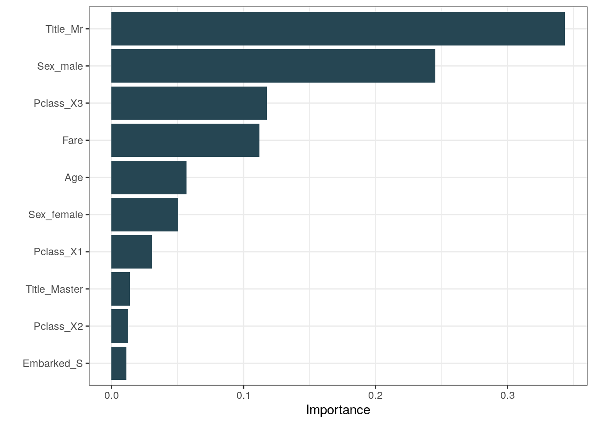

Utilizando Tidymodels com a base Titanic
Tidymodels
A objetivo deste post é utilizar o framework Tidymodels para realizar o pré-processamento dos dados, aplicar modelos de classificação e ajustar os hiperparâmetros utilizando grid search.
A primeira vez que ouvi falar do Tidymodels fiquei bastante interessado com a proposta de facilitar parte do workflow da ciência de dados do cotidiano. No R temos muitas formas possíveis de resolver um mesmo problema (o que é ótimo!) e não é incomum concluirmos um script com uma lista bem grande de dependências (caret, e1071, MASS, fastDummies... e por aí vai). Ter um conjunto de ferramentas organizadas em um mesmo pacote e seguindo uma mesma filosofia, a exemplo do Tidyverse, me pareceu algo bem promissor e necessário tanto para análises locais como para a criação de modelos para produção.
Importação dos dados
A base utilizada aqui é a Titanic e os modelos serão utilizados para classificar sobreviventes. As predições obtidas serão submetidas na competição Titanic - Machine Learning from Disaster, do Kaggle.
library(dplyr)
library(readr)
library(tidymodels)
titanic_train <- readr::read_csv("~/Kaggle/Titanic/train.csv",
col_types = cols(Sex ='f',
Pclass ='f',
Survived = 'f',
Embarked = 'f'))
titanic_test <- readr::read_csv("~/Kaggle/Titanic/test.csv",
col_types = cols(Sex ='f',
Pclass ='f',
Embarked = 'f'))O dataset do modo que é fornecido pelo Kaggle já está dividido entre treino e teste. No entanto, a função initial_split() do pacote rsample (parte do tidymodels) executa essa divisão de modo bem elegante.
glimpse(titanic_train)## Rows: 891
## Columns: 12
## $ PassengerId <dbl> 1, 2, 3, 4, 5, 6, 7, 8, 9, 10, 11, 12, 13, 14, 15, 16, 17…
## $ Survived <fct> 0, 1, 1, 1, 0, 0, 0, 0, 1, 1, 1, 1, 0, 0, 0, 1, 0, 1, 0, …
## $ Pclass <fct> 3, 1, 3, 1, 3, 3, 1, 3, 3, 2, 3, 1, 3, 3, 3, 2, 3, 2, 3, …
## $ Name <chr> "Braund, Mr. Owen Harris", "Cumings, Mrs. John Bradley (F…
## $ Sex <fct> male, female, female, female, male, male, male, male, fem…
## $ Age <dbl> 22, 38, 26, 35, 35, NA, 54, 2, 27, 14, 4, 58, 20, 39, 14,…
## $ SibSp <dbl> 1, 1, 0, 1, 0, 0, 0, 3, 0, 1, 1, 0, 0, 1, 0, 0, 4, 0, 1, …
## $ Parch <dbl> 0, 0, 0, 0, 0, 0, 0, 1, 2, 0, 1, 0, 0, 5, 0, 0, 1, 0, 0, …
## $ Ticket <chr> "A/5 21171", "PC 17599", "STON/O2. 3101282", "113803", "3…
## $ Fare <dbl> 7.2500, 71.2833, 7.9250, 53.1000, 8.0500, 8.4583, 51.8625…
## $ Cabin <chr> NA, "C85", NA, "C123", NA, NA, "E46", NA, NA, NA, "G6", "…
## $ Embarked <fct> S, C, S, S, S, Q, S, S, S, C, S, S, S, S, S, S, Q, S, S, …Vamos extrair o título de cada nome utilizando regex e essa será o único feature engineering aplicado. É interessante notar que no dataset de teste existe um título que não aparece no dataset de treino (Dona), este problema (novel factor level) será tratado com um step do recipes.
titanic_train$Title = stringr::str_match(titanic_train$Name, "([A-Za-z]+)\\.")[,2] %>% as.factor()
titanic_test$Title = stringr::str_match(titanic_test$Name, "([A-Za-z]+)\\.")[,2] %>% as.factor()summary(titanic_train, maxsum = 20)## PassengerId Survived Pclass Name Sex
## Min. : 1.0 0:549 3:491 Length:891 male :577
## 1st Qu.:223.5 1:342 1:216 Class :character female:314
## Median :446.0 2:184 Mode :character
## Mean :446.0
## 3rd Qu.:668.5
## Max. :891.0
##
##
##
##
##
##
##
##
##
##
##
## Age SibSp Parch Ticket
## Min. : 0.42 Min. :0.000 Min. :0.0000 Length:891
## 1st Qu.:20.12 1st Qu.:0.000 1st Qu.:0.0000 Class :character
## Median :28.00 Median :0.000 Median :0.0000 Mode :character
## Mean :29.70 Mean :0.523 Mean :0.3816
## 3rd Qu.:38.00 3rd Qu.:1.000 3rd Qu.:0.0000
## Max. :80.00 Max. :8.000 Max. :6.0000
## NA's :177
##
##
##
##
##
##
##
##
##
##
## Fare Cabin Embarked Title
## Min. : 0.00 Length:891 S :644 Capt : 1
## 1st Qu.: 7.91 Class :character C :168 Col : 2
## Median : 14.45 Mode :character Q : 77 Countess: 1
## Mean : 32.20 NA's: 2 Don : 1
## 3rd Qu.: 31.00 Dr : 7
## Max. :512.33 Jonkheer: 1
## Lady : 1
## Major : 2
## Master : 40
## Miss :182
## Mlle : 2
## Mme : 1
## Mr :517
## Mrs :125
## Ms : 1
## Rev : 6
## Sir : 1summary(titanic_test, maxsum = 20)## PassengerId Pclass Name Sex Age
## Min. : 892.0 3:218 Length:418 male :266 Min. : 0.17
## 1st Qu.: 996.2 2: 93 Class :character female:152 1st Qu.:21.00
## Median :1100.5 1:107 Mode :character Median :27.00
## Mean :1100.5 Mean :30.27
## 3rd Qu.:1204.8 3rd Qu.:39.00
## Max. :1309.0 Max. :76.00
## NA's :86
##
##
## SibSp Parch Ticket Fare
## Min. :0.0000 Min. :0.0000 Length:418 Min. : 0.000
## 1st Qu.:0.0000 1st Qu.:0.0000 Class :character 1st Qu.: 7.896
## Median :0.0000 Median :0.0000 Mode :character Median : 14.454
## Mean :0.4474 Mean :0.3923 Mean : 35.627
## 3rd Qu.:1.0000 3rd Qu.:0.0000 3rd Qu.: 31.500
## Max. :8.0000 Max. :9.0000 Max. :512.329
## NA's :1
##
##
## Cabin Embarked Title
## Length:418 Q: 46 Col : 2
## Class :character S:270 Dona : 1
## Mode :character C:102 Dr : 1
## Master: 21
## Miss : 78
## Mr :240
## Mrs : 72
## Ms : 1
## Rev : 2Preparando os dados com recipes
Podemos perceber que em ambos datasets existe NA's. Vamos utilizar o pacote recipes para fazer a imputação desses dados com k-nearest neighbor e todos os outros pré-processamentos necessários para transformar os dados em uma matriz pronta para ser utilizada no treinamento dos modelos.
Algo muito interessante do recipes é o encapsulamento da execução do pré-processamento: os passos definidos aqui utilizando o dataset de treino mais tarde serão aplicados ao dataset de teste quando o modelo for utilizado para predição. Isso além de facilitar muito a manutenção de todo o processo de ajuste de dados e modelagem, ajuda a evitar data leakage.
Seguimos os passos:
Na função
recipeprimeiro definimos a fórmula que será utilizada nos modelos. A função já atribui roles às variáveis, sendo Survived rotulado como outcome e as outras 6 variáveis como predictors. Essa atribuição de papéis facilita muito a aplicação dos passos seguintes definidos na recipe, já que podemos, por exemplo, fazer uma referência a todos os predictors com a funçãoall_predictors().Em seguida é aplicado o
step_novelque determina o que deve ser feito caso um novo nível que não está presente no dataset de treino seja encontrado na variável Title durante uma posterior utilização do modelo(é o caso do título Dona). Aqui definimos que será rotulada para "n".Com
step_otheros níveis de menor frêquencia (definida no parâmetro threshold em 0.1% do total) da variável Title são convertidos e somados para um novo nível "other".Temos a especificação de um step de dummies para todas variáveis nominais que serão transformadas em binárias. Aqui eu utilizo o argumento
one_hot = Tpara facilitar a visualização da importância das variáveis, assim haverá uma dummy para cada nível e não n-1 dummies, como é usual.Por último, todos as variáveis são imputadas utilizando o algorítmo knn, preenchendo os valores faltantes (NA's).
titanic_recipe <- recipe(Survived ~ Sex + Age + Pclass + Fare + Title + Embarked,
data = titanic_train) %>%
step_novel(Title, new_level = "n") %>%
step_other(Title, threshold = 0.001) %>%
step_dummy(all_nominal(),one_hot = T, -Survived) %>%
step_knnimpute(all_predictors(), neighbors = 3)
titanic_recipe## Data Recipe
##
## Inputs:
##
## role #variables
## outcome 1
## predictor 6
##
## Operations:
##
## Novel factor level assignment for Title
## Collapsing factor levels for Title
## Dummy variables from all_nominal(), -Survived
## K-nearest neighbor imputation for all_predictors()O dataset resultante disso pode ser visualizado utilizando prep() + bake(). Perceba que foi criada a variável Title_other.
titanic_recipe %>%
prep(training = titanic_train) %>%
bake(new_data = titanic_test) %>%
glimpse()## Rows: 418
## Columns: 28
## $ Age <dbl> 34.50000, 47.00000, 62.00000, 27.00000, 22.00000, 14.0…
## $ Fare <dbl> 7.8292, 7.0000, 9.6875, 8.6625, 12.2875, 9.2250, 7.629…
## $ Sex_male <dbl> 1, 0, 1, 1, 0, 1, 0, 1, 0, 1, 1, 1, 0, 1, 0, 0, 1, 1, …
## $ Sex_female <dbl> 0, 1, 0, 0, 1, 0, 1, 0, 1, 0, 0, 0, 1, 0, 1, 1, 0, 0, …
## $ Pclass_X3 <dbl> 1, 1, 0, 1, 1, 1, 1, 0, 1, 1, 1, 0, 0, 0, 0, 0, 0, 1, …
## $ Pclass_X1 <dbl> 0, 0, 0, 0, 0, 0, 0, 0, 0, 0, 0, 1, 1, 0, 1, 0, 0, 0, …
## $ Pclass_X2 <dbl> 0, 0, 1, 0, 0, 0, 0, 1, 0, 0, 0, 0, 0, 1, 0, 1, 1, 0, …
## $ Title_Capt <dbl> 0, 0, 0, 0, 0, 0, 0, 0, 0, 0, 0, 0, 0, 0, 0, 0, 0, 0, …
## $ Title_Col <dbl> 0, 0, 0, 0, 0, 0, 0, 0, 0, 0, 0, 0, 0, 0, 0, 0, 0, 0, …
## $ Title_Countess <dbl> 0, 0, 0, 0, 0, 0, 0, 0, 0, 0, 0, 0, 0, 0, 0, 0, 0, 0, …
## $ Title_Don <dbl> 0, 0, 0, 0, 0, 0, 0, 0, 0, 0, 0, 0, 0, 0, 0, 0, 0, 0, …
## $ Title_Dr <dbl> 0, 0, 0, 0, 0, 0, 0, 0, 0, 0, 0, 0, 0, 0, 0, 0, 0, 0, …
## $ Title_Jonkheer <dbl> 0, 0, 0, 0, 0, 0, 0, 0, 0, 0, 0, 0, 0, 0, 0, 0, 0, 0, …
## $ Title_Lady <dbl> 0, 0, 0, 0, 0, 0, 0, 0, 0, 0, 0, 0, 0, 0, 0, 0, 0, 0, …
## $ Title_Major <dbl> 0, 0, 0, 0, 0, 0, 0, 0, 0, 0, 0, 0, 0, 0, 0, 0, 0, 0, …
## $ Title_Master <dbl> 0, 0, 0, 0, 0, 0, 0, 0, 0, 0, 0, 0, 0, 0, 0, 0, 0, 0, …
## $ Title_Miss <dbl> 0, 0, 0, 0, 0, 0, 1, 0, 0, 0, 0, 0, 0, 0, 0, 0, 0, 0, …
## $ Title_Mlle <dbl> 0, 0, 0, 0, 0, 0, 0, 0, 0, 0, 0, 0, 0, 0, 0, 0, 0, 0, …
## $ Title_Mme <dbl> 0, 0, 0, 0, 0, 0, 0, 0, 0, 0, 0, 0, 0, 0, 0, 0, 0, 0, …
## $ Title_Mr <dbl> 1, 0, 1, 1, 0, 1, 0, 1, 0, 1, 1, 1, 0, 1, 0, 0, 1, 1, …
## $ Title_Mrs <dbl> 0, 1, 0, 0, 1, 0, 0, 0, 1, 0, 0, 0, 1, 0, 1, 1, 0, 0, …
## $ Title_Ms <dbl> 0, 0, 0, 0, 0, 0, 0, 0, 0, 0, 0, 0, 0, 0, 0, 0, 0, 0, …
## $ Title_Rev <dbl> 0, 0, 0, 0, 0, 0, 0, 0, 0, 0, 0, 0, 0, 0, 0, 0, 0, 0, …
## $ Title_Sir <dbl> 0, 0, 0, 0, 0, 0, 0, 0, 0, 0, 0, 0, 0, 0, 0, 0, 0, 0, …
## $ Title_other <dbl> 0, 0, 0, 0, 0, 0, 0, 0, 0, 0, 0, 0, 0, 0, 0, 0, 0, 0, …
## $ Embarked_S <dbl> 0, 1, 0, 1, 1, 1, 0, 1, 0, 1, 1, 1, 1, 1, 1, 0, 0, 0, …
## $ Embarked_C <dbl> 0, 0, 0, 0, 0, 0, 0, 0, 1, 0, 0, 0, 0, 0, 0, 1, 0, 1, …
## $ Embarked_Q <dbl> 1, 0, 1, 0, 0, 0, 1, 0, 0, 0, 0, 0, 0, 0, 0, 0, 1, 0, …Especificação e ajuste do modelo com parsnip e tune
Na especificação do modelo o pacote parsnip entra em cena. Esse primeiro modelo será um RandomForest, então utilizamos a função rand_forest() para passar os parâmetros. A todos os parâmetros que serão buscados na grid devemos atribuir a função tune(), caso contrário, algum outro valor padrão será assumido.
Aqui foi invocado o pacote randomForest na engine, porém o pacote ranger também pode ser utilizado sem problemas e com a vantagem de possuir alguns parâmetros a mais que o randomForest.
rf_spec <- parsnip::rand_forest(
mtry = tune(),
trees = tune(),
min_n = tune()
) %>%
set_mode("classification") %>%
set_engine("randomForest")O workflow() é o elo entre o parsnip e o recipes. Adicionamos as especificações do modelo e o objeto recipe no workflow e chamamos a função tune_grid() para iniciar a busca dos hiperparâmetros no grid. O workflow também empacota o pré-processamento e o modelo, de modo que o preparo do recipe é executado em um único passo, sem necessidade do prep():
rf_wf <- workflow() %>%
add_model(rf_spec) %>%
add_recipe(titanic_recipe)
rf_wf## ══ Workflow ════════════════════════════════════════════════════════════════════
## Preprocessor: Recipe
## Model: rand_forest()
##
## ── Preprocessor ────────────────────────────────────────────────────────────────
## 4 Recipe Steps
##
## ● step_novel()
## ● step_other()
## ● step_dummy()
## ● step_knnimpute()
##
## ── Model ───────────────────────────────────────────────────────────────────────
## Random Forest Model Specification (classification)
##
## Main Arguments:
## mtry = tune()
## trees = tune()
## min_n = tune()
##
## Computational engine: randomForestEm seguida criamos o grid de ajuste dos hiperparâmetros e definimos as regras de cross-validation. Será utilizado um regular grid para o modelo RandomForest com uma combinação simples de valores para número de variáveis utilizadas por split, número de árvores (fixo em 1000) e tamanho mínimo de nó.
O cross-validation será feito com 5 folds.
tune_grid <- expand.grid(mtry = 2:25, trees = c(1000), min_n = seq(3, 30, by = 5))
vb_folds <- rsample::vfold_cv(data = titanic_train, strata = Survived, v = 5 )Neste passo diversos modelos são criados e suas métricas obtidas em cada fold são armazenadas no objeto rf_tune_res.
rf_tune_res <- tune_grid(
rf_wf,
grid = tune_grid,
resamples = vb_folds,
control = control_grid(verbose = T, save_pred = T)
)library(viridis)
autoplot(rf_tune_res)+
theme_bw() +
scale_color_viridis_d() 
Podemos selecionar o melhor modelo com base na roc-auc utilizando select_best e o workflow é finalizado. Se passarmos o parâmetro "accuracy" em select_best a escolha é realizada selecionando a melhor acurácia. Ainda não temos um modelo ajustado. O que temos no objeto final_rf é um conjunto de passos que inicia no ajuste de dados e acaba na obtenção dos parâmetros que serão utilizados no modelo.
best_rf<- select_best(rf_tune_res)
best_rf## # A tibble: 1 x 4
## mtry trees min_n .config
## <int> <dbl> <dbl> <fct>
## 1 23 1000 13 Preprocessor1_Model070final_rf <- finalize_workflow(
rf_wf,
best_rf
)Finalmente o modelo é ajustado e a predição é gerada com os dados de teste. Agora sim temos o modelo no objeto final_rf_fit:
final_rf_fit <- fit(final_rf, data = titanic_train)
final_rf_fit## ══ Workflow [trained] ══════════════════════════════════════════════════════════
## Preprocessor: Recipe
## Model: rand_forest()
##
## ── Preprocessor ────────────────────────────────────────────────────────────────
## 4 Recipe Steps
##
## ● step_novel()
## ● step_other()
## ● step_dummy()
## ● step_knnimpute()
##
## ── Model ───────────────────────────────────────────────────────────────────────
##
## Call:
## randomForest(x = maybe_data_frame(x), y = y, ntree = ~1000, mtry = min_cols(~23L, x), nodesize = min_rows(~13, x))
## Type of random forest: classification
## Number of trees: 1000
## No. of variables tried at each split: 23
##
## OOB estimate of error rate: 16.5%
## Confusion matrix:
## 0 1 class.error
## 0 498 51 0.09289617
## 1 96 246 0.28070175pred_rf <- predict(final_rf_fit, titanic_test)Aqui podemos avaliar a importância das variáveis (índice gini) no modelo:
pull_workflow_fit(final_rf_fit) %>%
vip::vip(aesthetics = list(fill = "#264653"))+
theme_bw() 
Xgboost
Para fazer o ajuste do XGBoost o processo é semelhante. Aqui, por conta da maior quantidade de parâmetros, a busca num regular grid teria um gasto computacional grande. Seguindo um post da Julia Silge, o modelo foi ajustado utilizando um hipercubo.
xgb_spec <- boost_tree(
trees = tune(),
tree_depth = tune(),
min_n = tune(),
loss_reduction = tune(),
sample_size = tune(),
mtry = tune(),
learn_rate = tune()
) %>%
set_engine("xgboost") %>%
set_mode("classification")
xgb_grid <- grid_latin_hypercube(
tree_depth(),
min_n(),
trees(range = c(500L, 1500L)),
loss_reduction(),
sample_size = sample_prop(),
mtry(range = c(1, 25)),
learn_rate(),
size = 50
)
xgb_wf <- workflow() %>%
add_recipe(titanic_recipe) %>%
add_model(xgb_spec)
xgb_res <- tune_grid(
xgb_wf,
resamples = vb_folds,
grid = xgb_grid,
control = control_grid(verbose = T, save_pred = T)
)autoplot(xgb_res) +
theme_bw() +
theme(axis.text.x=element_text(angle = -90, hjust = 0)) 
best_xgb<- select_best(xgb_res)
final_xgb <- finalize_workflow(
xgb_wf,
best_xgb
)final_xgb_fit <- fit(final_xgb, data = titanic_train)
pred_xgb <- predict(final_xgb_fit, titanic_test)pull_workflow_fit(final_xgb_fit) %>%
vip::vip(aesthetics = list(fill = "#264653"))+
theme_bw() 
E por fim salvamos as predições e submetemos no Kaggle
rf_final <- data.frame(PassengerId = titanic_test$PassengerId, Survived = pred_rf)
names(rf_final) <- c("PassengerId", "Survived")
readr::write_csv(rf_final, "rf_pred_final.csv")xgb_final <- data.frame(PassengerId = titanic_test$PassengerId, Survived = pred_xgb)
names(xgb_final) <- c("PassengerId", "Survived")
readr::write_csv(xgb_final, "xg_pred_final.csv")Os scores obtidos são:

Que me parece uma pontuação justa, pelo pouco esforço aplicado em feature engineering, seleção de variáveis e com base nesse post feito no board da competição: What's a Good Score for the Titanic Competition?
Referências
Boa parte deste estudo foi realizado utilizando os posts da Julia Silge e o material do Max Kuhn na rstudio::conf de 2020 como referência. O livro Tidy Modeling with R dos mesmos autores aborda detalhadamente todo o framework e é uma leitura muito agradável.